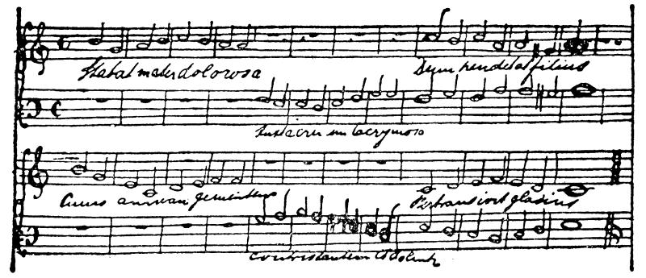
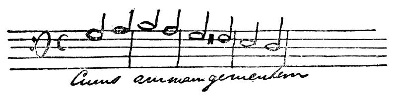

致玛丽亚·恩格斯
巴门
1839年1月7日[于不来梅]
第一次略加删节发表于1920年《德意志评论》杂志第4卷（斯图加特和莱比锡）；全文发表于《马克思恩格斯全集》1930年国际版第1部分第2卷
原文是德文
亲爱的玛丽亚：
但愿你的牙已经拔了，或者，没有必要拔。——有关池塘的谜语很好，不过你自己可以猜出来。你知道，作曲可不容易，要考虑到许多方面的问题：和声的协调、对位法的正确运用，这一切都要求付出巨大的劳动。不过，我一定设法在最近再给你寄点东西去。目前我正忙于谱写新的赞美诗。有两个声部，男低音和女高音相互交替。请看：

伴奏曲尚未写成，我以后可能还要做些改动。一看便知，除第四行以外，大部分都抄自赞美诗集。歌词是著名的拉丁文赞美诗：“Stabat mater dolorosa Juxta crucem lacrymosa Dum pendebat filius”FN1。
今天中午牧师先生FN2在洗衣房宰了一头猪，牧师太太FN3最初对这件事情连听都不愿意听，但是，牧师说把猪赠送给她，她才勉强同意。这头猪连叫都没叫一声。猪宰好后，牧师家的女人全都走进来了。老祖母不让任何人取猪血，当时的情况看上去非常滑稽。明天要做香肠，这是老祖母最大的乐趣。
你说你仿佛看见了一只猴子，而这猴子好象是你自己。你在粘信封的封缄纸上写的是：“Je dis la vérité”FN4，这点你记得吗？
上面还画了一面镜子。
告诉妈妈，她以后不要再写：“特雷维腊努斯”，她写姓名地址时完全可以不写牧师先生的姓名，邮差知道我住在哪里，因为我每天都到邮局寄信。除此之外，这还会使邮差把我的信送到特雷维腊努斯家，而不是送到商行。这样一来，就要迟好几个钟头，等我回家以后才能收到信。
施特吕克尔给我来信说，海尔曼FN5在新年前的那个星期天登台演出，扮演了各种角色，如侍役等。他该来信告诉我这件事情。——施特吕克尔对海尔曼的演技大加赞扬，说他扮演侍役，生动逼真，好象他在旅馆工作过三年。他可能大有进步吧？
别让母亲把我作的曲子给朔尔恩施泰因看，不然他又会说：“真是胡闹”。要知道，你们那里所发生的一切，我都会打听到的。下次我再去巴门的时候，我要象老头儿FN6一样，成为不来梅市的领事。
Addiós mi hermanaFN7.
你的 弗里德里希
男低音声部有不少笔误，你应该原谅我，因为我写音符还不熟练。倒数第二行怕你看不清，我现在把它再抄一遍。

脚 注
FN1 “圣母悲痛地站在十字架下，泪流满面，望着钉在十字架上的儿子”。（这是天主教的圣母赞美诗的开头部分，很多作曲家把它谱成曲子，其中有佩戈莱西、帕勒斯特里纳、罗西尼。）——编者注
FN2 格奥尔格·哥特弗里德·特雷维腊努斯。——编者注
FN3 玛蒂尔达·特雷维腊努斯。——编者注
FN4 “我说的是真话”。——编者注
FN5 海尔曼·恩格斯。——编者注
FN6 亨利希·洛伊波尔德。——编者注
FN7 再见，我的妹妹。——编者注